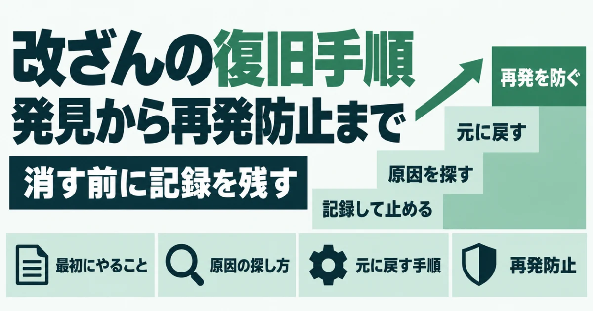
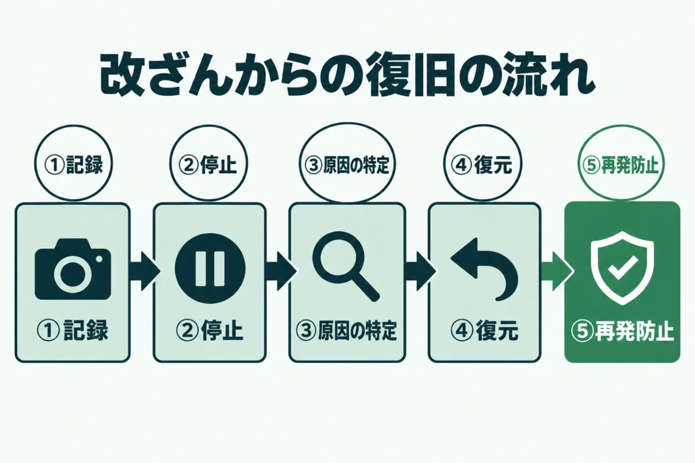
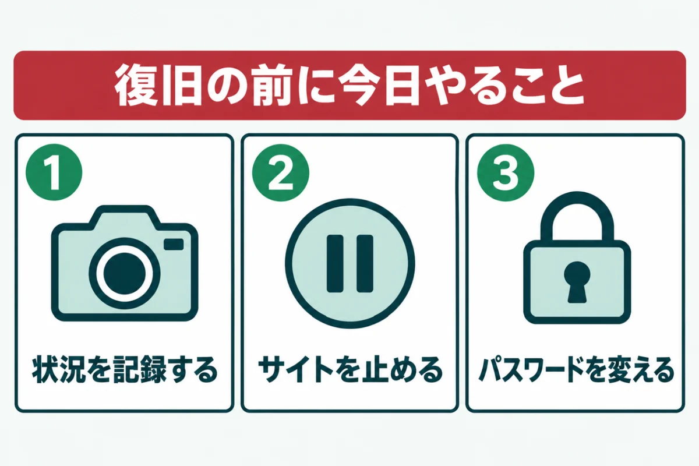
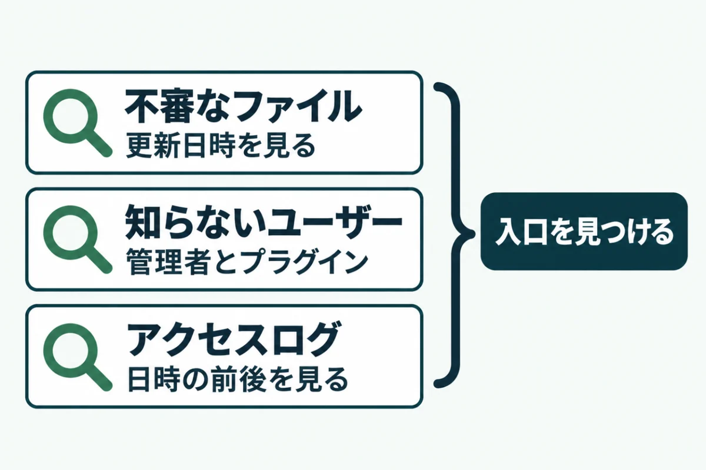
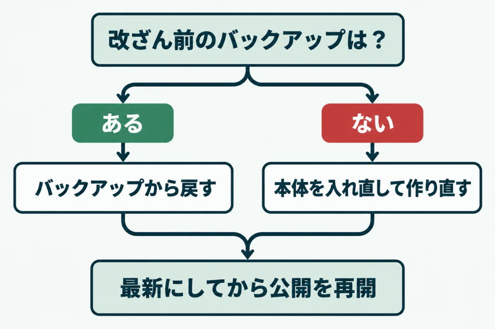
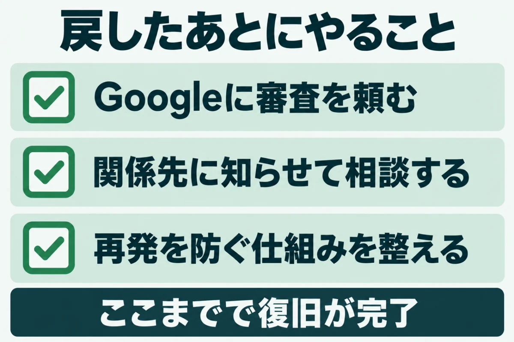

ホームページ改ざんの復旧手順発見から再発防止まで

「ホームページが改ざんされてしまった。何から手をつければいいのだろう」と焦っていませんか？
慌てて怪しいファイルを消すと、原因が分からなくなり、同じ被害を繰り返すおそれがあるのです。
この記事では、ホームページの改ざんから復旧する手順を、発見から再発防止まで順に紹介します。気づいた直後にやることと、Googleの警告を外す方法もまとめました。
運営者が自社サイトの点検で確かめた、バックアップの保存期間などの事実も入れています。被害が起きる前の備えとしても読んでください。
ホームページの改ざんから復旧するまでの流れ

ホームページの改ざんからの復旧は、記録、停止、原因の特定、復元、再発防止の順に進めます。順番を守ると、作業の抜けや二度手間が減るでしょう。まずは全体の流れをつかみ、いまどの段階にいるのかを確かめてください。
被害の大きさによって、自分で直せる場合と専門家に頼むべき場合があります。どちらの場合でも、流れを知っておくと話が早く進むはずです。
復旧は5つの段階で進める
改ざんに気づいたら、まず画面の様子や届いた通知を記録に残します。次に、サイトを一時的に止めて、パスワードを変えましょう。そのうえで原因を探し、改ざん前のバックアップなどを使って元の状態に戻す流れです。
最後に、Googleの警告を外す手続きと、再発を防ぐ対策を行います。止めて、調べて、戻して、ふさぐという順番だと覚えておくとよいでしょう。段階ごとに、やったことと日時をメモしておくと、あとで関係先に説明するときに役立ちます。
慌てて消すと原因が分からなくなる
改ざんに気づくと、怪しいファイルをすぐに消したくなるでしょう。ところが、消してしまうと、どこから入られたのかを調べる手がかりも失われます。入口をふさがないまま元に戻すと、同じ方法で何度でも改ざんされるおそれがあるのです。
消す前に、ファイル名と更新日時、置かれていた場所を控えてください。控えを取ったうえで削除すれば、原因を調べる作業と両立できます。自分で控えを取るのが難しいときは、触らずに専門家へ相談するのも1つの方法です。
ホームページの改ざんに気づいたら復旧の前にやる3つのこと

ホームページの改ざんに気づいたら、復旧の作業に入る前に被害が広がらないようにすることが先です。改ざんされたページは、開いた人を偽のサイトへ誘導し続けている場合があります。次の3つは、気づいたその日のうちに済ませてください。
1人で抱えず、制作会社や社内の担当者にも早めに知らせましょう。どれも、専門の知識がなくても進められる作業です。
① 状況を記録して残す
最初に、改ざんされた画面をスクリーンショットで残します。表示がおかしいページのURL、気づいた日時、見つけたきっかけもメモしてください。サーバー会社やGoogleから届いたメールは、消さずに保存しておきましょう。
こうした記録は、原因を調べるときや、警察などに相談するときに役立つ材料です。多くのレンタルサーバーでは、管理画面からアクセスログを取り出せます。保存される期間は短いことが多いので、早めに控えを取っておくと安心です。
② サイトを一時的に止める
改ざんされたままのページを公開し続けると、訪れた人に被害が広がってしまうでしょう。総務省も、復旧に時間がかかる場合は一時的にホームページを非公開にすることを挙げています。
止め方は、メンテナンス中の表示に切り替える方法と、サーバー側で公開を止める方法の2つです。管理画面に入れない場合は、サーバー会社に連絡して止めてもらうことも考えてください。止めている間に、次のパスワードの変更と原因の調査を進めます。
③ パスワードをすべて変える
改ざんした相手は、盗んだパスワードで再びログインしてくることがあります。管理者に加え、サーバーの管理画面、FTP、データベースのパスワードも変えてください。同じパスワードをほかのサービスでも使っていれば、そちらも変えましょう。
wp-config.phpの認証用キーを変えると、ログイン中の人を締め出せます。変えた後のパスワードは、長く推測されにくいものにしてください。パスワードの管理ツールを使えば、長いパスワードでも覚えておく必要はありません。
ホームページの改ざんの原因を探して復旧に備える

ホームページの改ざんから復旧する前に、どこから入られたのかを突き止めることが欠かせません。入口が分かれば、戻したあとで確実にふさげるからです。総務省は、改ざんの多くが安易なパスワードや残ったままの弱点から起きると説明しています。
次の3つを順に確かめていきましょう。調べた結果は、記録のメモに書き足しておいてください。
不審なファイルと変更日時を確かめる
サーバーのファイルマネージャーやFTPで、最近更新されたファイルを探します。特に、画像を入れる「uploads」のフォルダにPHPのファイルがあれば要注意です。見覚えのない名前のファイルや、同じ時刻にまとめて書き換えられたファイルも手がかりになります。
運営者も自社サイトの点検で、uploadsのフォルダにPHPのファイルがないかを確かめました。見つけたファイルは、削除する前に名前と場所を控えてください。
見覚えのないユーザーやプラグインを確かめる
WordPressの管理画面で「ユーザー」を開き、知らない管理者がいないかを見ます。改ざんした相手が、次に入るための裏口として管理者を足していることがあるからです。
運営者の自社サイトの点検でも、数年前の外注先の編集者アカウントが2つ残っていました。改ざんとは関係なくても、使っていないアカウントは入口になりかねません。プラグインの一覧にも、入れた覚えのないものがないかを確かめましょう。見つけたら、削除する前に作成日と名前を控えておくと調査に役立ちます。
サーバーのアクセスログを確かめる
アクセスログには、いつ、どこから、どのページにアクセスがあったかが残ります。管理画面へのログインや、不審なファイルへのアクセスの日時を探すのが基本です。ファイルの更新日時の前後を重点的に見ると、入口を絞り込みやすくなります。
ログを読むには慣れが必要なので、難しいと感じたら専門家に見てもらってください。そのときのために、ログの控えは早めに取っておきましょう。保存期間を過ぎたログは、あとから取り出せなくなります。
ホームページの改ざんを復旧する手順

原因の見当がついたら、ホームページの改ざんを復旧する作業に入りましょう。復旧の方法は、改ざん前のバックアップがあるかどうかで変わります。どちらの方法でも、最後に弱点をふさぐ作業までをひとまとまりと考えてください。
戻すだけで終わると、同じ入口から再び改ざんされるおそれが残ります。作業の前には、今の状態も念のためバックアップしておくと安心です。
改ざん前のバックアップから戻す
レンタルサーバーの自動バックアップを使えば、管理画面から過去の状態に戻せます。エックスサーバーの場合、Webデータとデータベースを別々に戻す仕組みです。マニュアルでは、バックアップの日より後に作られたファイルは、戻すと削除されると説明されています。
運営者が自社サイトのサーバーで確かめたところ、Webデータは7日分、データベースは14日分でした。改ざんに気づくのが遅れると、戻せる日が残っていないこともあるのです。
バックアップがないときは入れ直して作り直す
戻せるバックアップがない場合は、WordPressの本体を入れ直すところから始めるのが基本です。管理画面の「更新」にある本体を再インストールするボタンで、ファイルを入れ直せます。ただし、テーマやプラグイン、画像などが入る「wp-content」は対象外です。
テーマとプラグインは、公式の配布元から最新版を入れ直しましょう。記事に埋め込まれた不正なコードは、1つずつ探して消すことになります。手間がかかるので、専門家に頼むほうが早く済む場合も多いでしょう。
本体・プラグイン・PHPを最新にする
戻した直後のサイトは、改ざんされたときと同じ弱点を抱えたままです。本体、プラグイン、テーマ、PHPを、どれも最新の版に上げてから公開を再開してください。使っていないプラグインやテーマは、この機会に削除しましょう。
詳しくは、WordPressのプラグインに脆弱性が見つかったときの対処法で紹介しています。更新が終わったら、表示と問い合わせフォームが正しく動くかも確かめておくと安心です。あわせて、新しいパスワードで管理画面に入れるかも見ておきましょう。
ホームページの改ざんを復旧したあとにやること

ホームページの改ざんを復旧したら、周りに残った影響を片づける作業が残っています。検索結果の警告や、取引先への説明などがそれにあたるでしょう。二度と同じ被害にあわないための仕組みづくりも、この段階で済ませてください。
どれも後回しにすると、お客さまの信用を取り戻すまでの時間が延びてしまいます。1つずつ順に片づけていきましょう。
Googleに審査をリクエストする
警告が付いた場合は、Search Consoleの「セキュリティの問題」を確かめてください。Googleのヘルプでは、すべてのページで問題を直してから審査を頼むよう案内しています。一部のページだけ直しても、検索結果の表示は変わりません。
審査を頼むときは、何が起きて、どう直したかを具体的に書きます。審査には数日から数週間かかるため、結果が届くまで再送しないようにしましょう。直し残しがあると、次の結果が届くまでの期間が延びることがあります。
関係先に知らせて相談窓口に届け出る
偽のサイトへの誘導などで、お客さまに被害が出ている場合は、サイト上でお知らせを出します。お知らせには、起きたことと期間、すでに行った対応を書いておくと伝わりやすいでしょう。
被害の相談は、IPAの企業組織向けサイバーセキュリティ相談窓口が受け付けています。応急処置の助言や、専門業者の紹介などを受けられる窓口です。犯罪としての相談は、都道府県警察のサイバー犯罪の相談窓口が受け付けています。どちらに相談するか迷うときは、まずIPAの窓口に連絡すると案内を受けられるでしょう。
再発を防ぐ仕組みを整える
復旧が終わったら、同じことを繰り返さないための仕組みを整えることが大切です。月に1回は本体とプラグインの更新を確かめ、外からの点検で弱点が残っていないかを見ましょう。バックアップは、サーバーの外にも月に1回ほど控えを取ると安心です。
自動バックアップだけでは、気づくのが遅れたときに戻せる日がなくなってしまいます。改ざんのサインの見つけ方は、ホームページが改ざんされたかも？確認したい7つのサインと自分でできる確かめ方にまとめました。
URLを入れるだけで、WordPressやPHPの版、ログイン名など7項目を無料で判定します。登録はいりません。
無料で診断するホームページの改ざんの復旧に関するよくある質問
ホームページの改ざんの復旧には、どのくらい時間がかかりますか？
被害の大きさと、改ざん前のバックアップがあるかどうかで変わります。バックアップから戻せる場合は、作業そのものは数時間で済むこともあるでしょう。原因の調査や不正なコードの削除が必要な場合は、数日以上かかることも珍しくありません。Googleの警告を外す審査にも、数日から数週間かかります。慌てずに、段階ごとに進めてください。
自分で復旧しても大丈夫ですか？
バックアップから戻して、パスワードの変更と更新まで自分でできるなら、自分で進めても構いません。ただし、原因が分からないまま戻すと、同じ入口から再び改ざんされることがあります。不正なコードが記事に入り込んでいる場合は、専門家に頼みましょう。お客さまの情報が漏れた疑いがあるときも、早めの相談が大切です。
改ざんされたことを、お客さまに知らせる必要はありますか？
偽のサイトへの誘導や、不審なメールの送信など、お客さまに影響が出ている場合は知らせるべきです。黙っていると、あとで分かったときに信用を大きく損ないます。サイトのお知らせで、起きたことと期間、行った対応を伝えましょう。個人情報が漏れた疑いがある場合は、個人情報保護委員会への報告が必要になることもあります。判断に迷うときは、専門家や弁護士に相談してください。
バックアップから戻したのに、また改ざんされました。なぜですか？
改ざんの入口がふさがれていないことが、いちばんの理由です。古いプラグインの弱点や、変えていないパスワードが残っていると、同じ方法で入られます。バックアップの中に、すでに不正なファイルが含まれていた可能性もあるでしょう。戻す日を選ぶときは、改ざんが始まった日より前のものを使ってください。入口が分からない場合は、専門家にログを見てもらうのが近道です。
自分で調べるのが不安なときはどうすればいいですか？
まずは、制作会社や保守を頼んでいる会社に、気づいたことと記録を見せて相談しましょう。IPAの企業組織向けの相談窓口でも、応急処置の助言を受けられます。今の状態を外から確かめたいときは、サイトドックの無料簡易診断が役立つでしょう。詳しく調べたい場合は、有料の詳細診断で、管理画面やサーバーの中まで確かめられます。
まとめ
ホームページの改ざんからの復旧は、記録、停止、原因の特定、復元、再発防止の順に進めます。怪しいファイルをすぐに消さず、まず記録を残して、パスワードを変えてください。
戻したあとは、本体とプラグイン、PHPを最新にし、Googleへの審査も忘れずに頼みましょう。
被害が起きる前に、サーバーの外にもバックアップの控えを取るところから始めてください。
まずは、今の状態を知るところから。
URLを入れるだけで、数十秒で判定が出ます。登録はいりません。